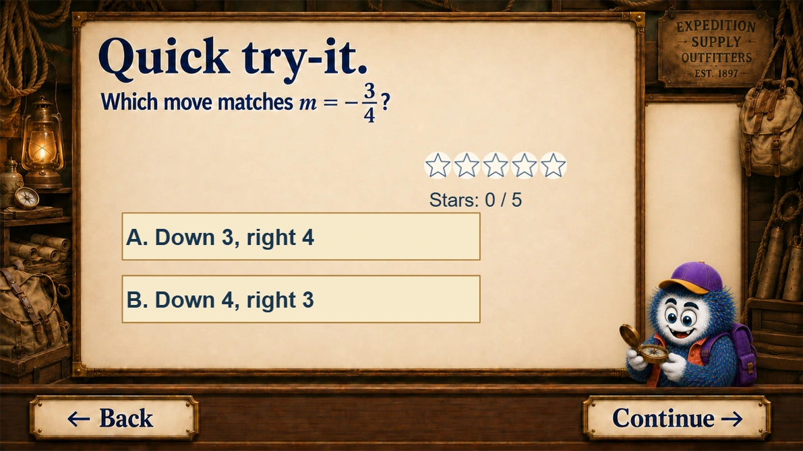
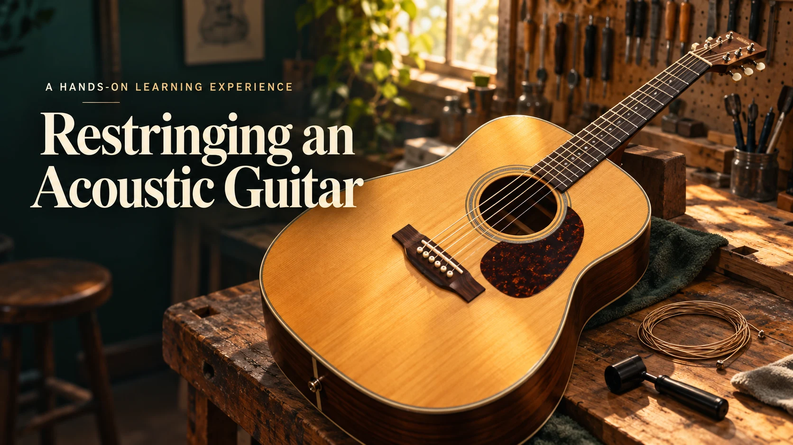

Learning design
I connect objectives, practice, and assessment. My graphing course moves learners through a worked routine, a practice choice, and an error-analysis task.
See the learning sequence →Robert Schmitz / Instructional Designer
I’m Robert Schmitz, an instructional designer with 11+ years of teaching experience. I build interactive courses, assessments, and curriculum systems that connect clear objectives with purposeful practice and useful feedback.

My path to instructional design
Teaching secondary and adult mathematics taught me to notice where a task stops making sense—and what helps someone move forward.
That perspective shapes my design work: breaking down complex tasks, anticipating misconceptions, and creating practice that makes the next step clear.
What draws me to instructional design is the opportunity to build that support into the experience itself. I want the objectives, interactions, feedback, and instructor resources to work together, so each part serves a clear purpose.
What I bring to a learning team

I connect objectives, practice, and assessment. My graphing course moves learners through a worked routine, a practice choice, and an error-analysis task.
See the learning sequence →
I build working Storyline experiences with decision tasks and targeted feedback. My acoustic guitar course asks beginners to interpret a problem and choose their next action.
Explore the Storyline course →I design resources others can use to lead learning. My 144-lesson Guided Notes curriculum pairs student materials with annotated teacher editions; my background also includes LMS use and district professional development.
Inspect the curriculum system →How I work
I use ADDIE as an iterative framework: understand the need, plan the evidence, build and deliver the experience, then use evaluation to guide revision.
Here is how that thinking appears in one project: a guitar lesson that connects an on-screen decision with a practical skill.

In practice / Acoustic guitar course
What comes next
I’m interested in instructional design, curriculum development, and eLearning roles across edtech, higher education, and organizational learning.